文本
试题
题尾
卷尾
其他
页面布局

级别 | 考点和演练 | 题型 | 考查内容 |
1级 | 气体压强微观解释 | 选择题/计算题 | 气体压力、压强计算 |
2级 | 气体实验定律 | 选择题/计算题 | 理想气体等温变化、等压变化、等容变化 |
3级 | 实验定律综合应用 | 选择题/计算题 | 理想气体等温变化、等压变化、等容变化 |
4级 | 探究气体等温变化规律 | 实验题 | 实验操作、注意事项、数据处理 |

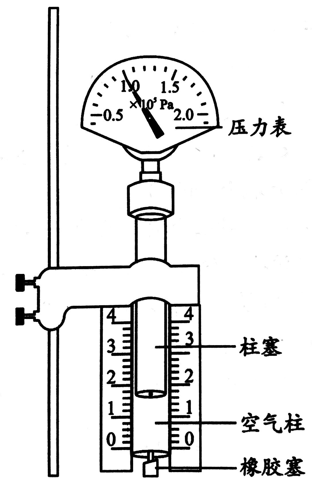
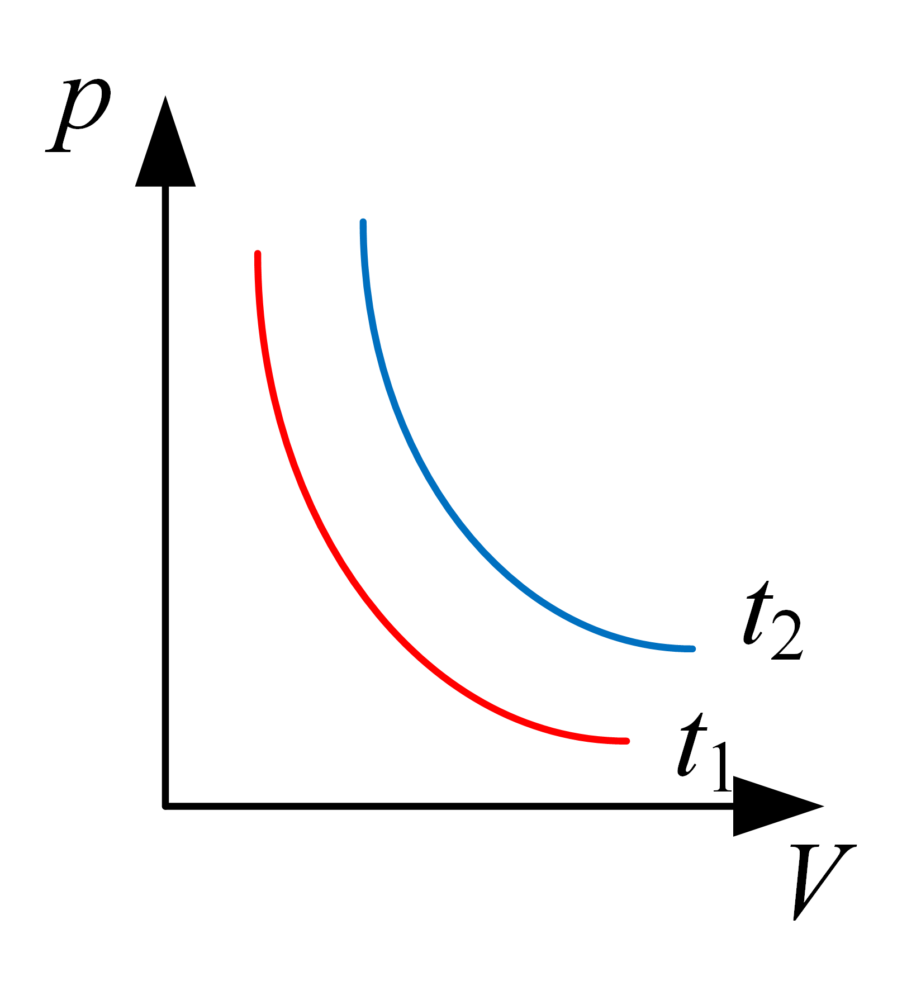
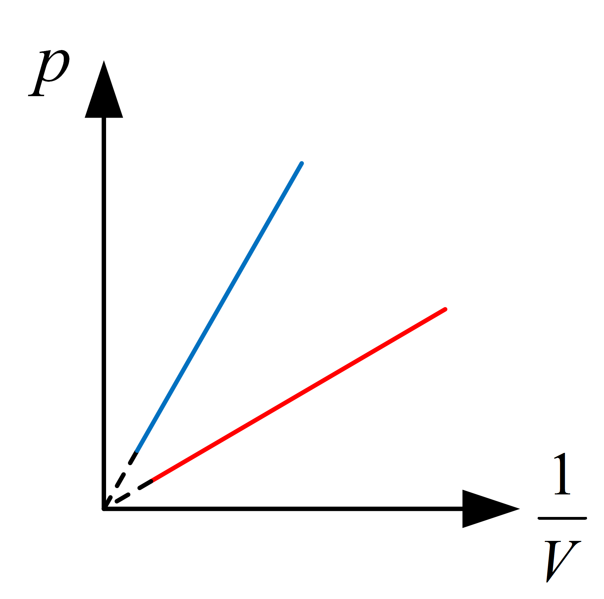
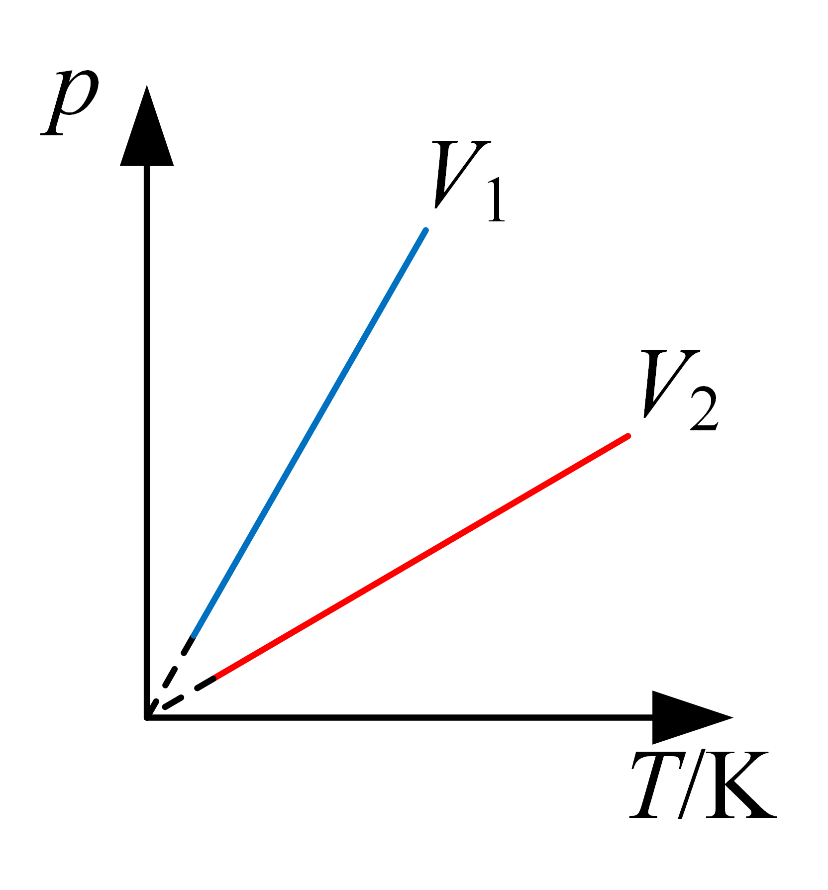
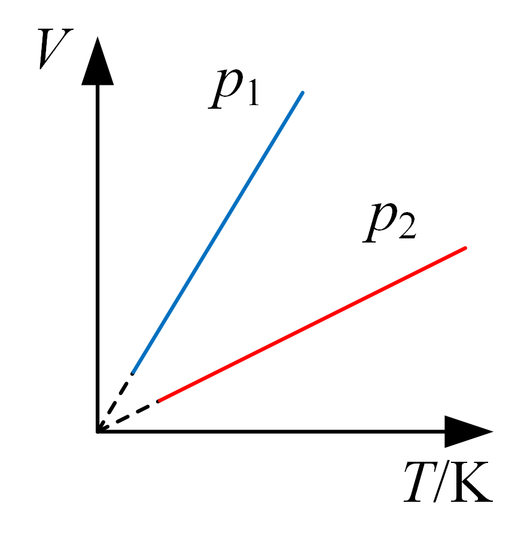
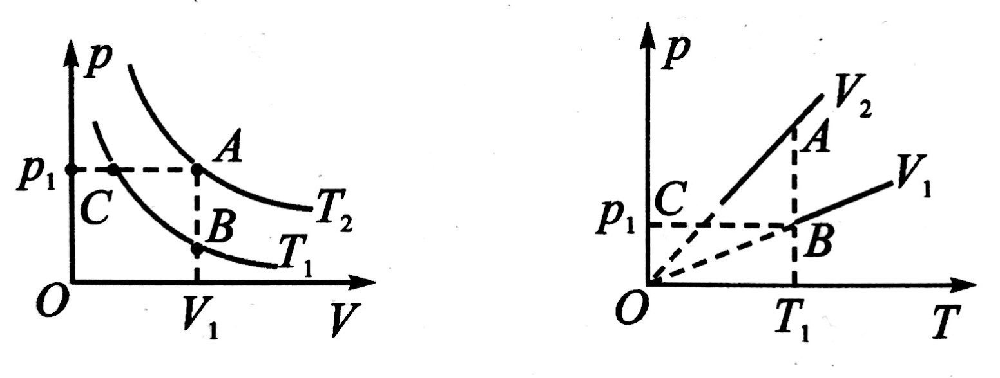

对于同一个物理问题，常常可以从宏观和微观两个不同角度进行研究．
如图所示，正方体密闭容器中有大量运动粒子，每个粒子质量为
①求一个粒子与器壁碰撞一次受到的冲量大小
②导出容器壁单位面积所受粒子压力
“温度是分子平均动能的标志”可以表示为
第一，理想气体的模型为气体分子可视为质点，分子间除了相互碰撞外，分子间无相互作用力；
第二，一定质量的理想气体，其压强
请根据上述信息并结合第（1）问的信息完成证明：
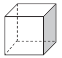

在一定温度下，当气体的体积增大时，气体的压强减小，这是因为（ ）
密闭容器中一定质量的某种理想气体的
定性判断．图中①、②、③三个不同状态，对应的温度分别是
定量计算．分别用
模型建构．从微观角度来看，气体压强的大小跟两个因素有关：一个是气体分子的平均动能，一个是分子的密集程度．如图所示，我们可以设计一个简易实验，用豆粒做气体分子的模型，将豆粒连续地倒在台秤的秤盘上，演示气体压强产生的微观机理．为了从宏观上模拟从状态①到状态②过程中气体压强减小，请说明实验操作的思路．
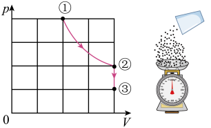
从分子动理论的观点来看，一个密闭容器中气体分子的运动是杂乱无章的，在某一时刻，向着任何一个方向运动的分子都有，而且向各个方向运动的气体分子数目几乎相等，如图所示．为简化问题，假定：气体分子的大小可以忽略，速率均为v，每次分子与器壁碰撞作用时间为Δt，碰撞前后气体分子的速度方向都与器壁垂直，且速率不变．已知每个分子的质量为m，单位体积内分子数量n为恒量．利用所学力学知识，回答以下问题：
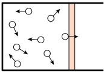
选择一个与器壁发生正碰的气体分子为研究对象，求碰撞过程气体分子对器壁的作用力 F0的大小；
推导出器壁单位面积受到的压力p的表达式；
对于一定量的气体，从宏观上看，仅升高温度或仅减小体积都会使气体压强增大，请从微观角度说明原因．
如图所示是一定质量的某种理想气体状态变化的
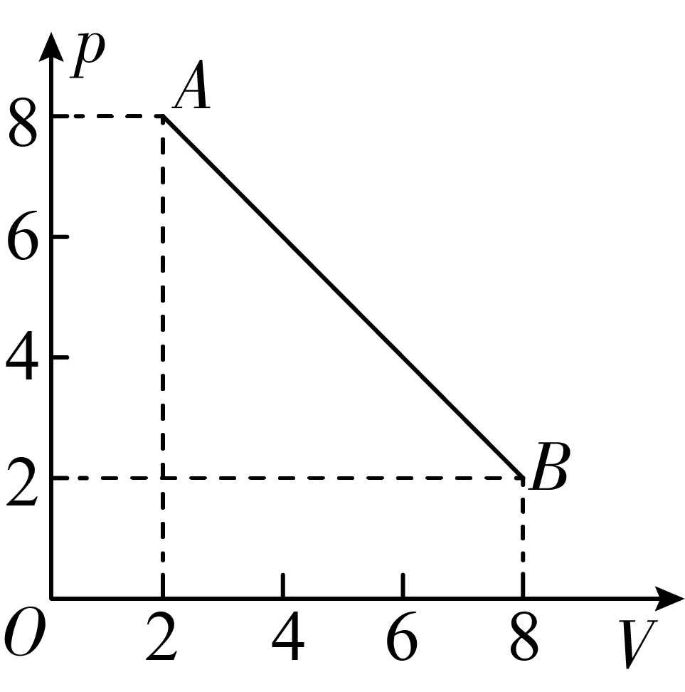
如图所示，向一个空的铝制饮料罐中插入一根透明吸管，吸管的容积远小于饮料罐的容积，二者间的接口用蜡密封，在吸管内引入一小段油柱。如果不计大气压强的变化，并依据制作时的气温和气压在吸管上等间距画出刻度线，这就是一个简易的温度计。下列说法正确的是（ ）
“拔火罐”是我国传统医学的一种治疗手段。操作时，医生用点燃的酒精棉球加热一个小罐内的空气，随后迅速把小罐倒扣在需要治疗的部位，冷却后小罐便紧贴在皮肤上（如图）。设加热后小罐内的空气温度为
如图所示，一定量的理想气体从状态A开始，经历两个过程，先后到达状态B和C。有关A、B和C三个状态温度
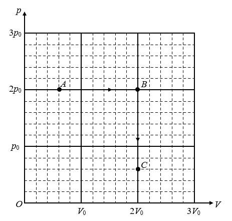
人类对现象的认识是从宏观到微观不断深入的，可以通过建构模型等方式寻求宏观现象的微观本质．如图
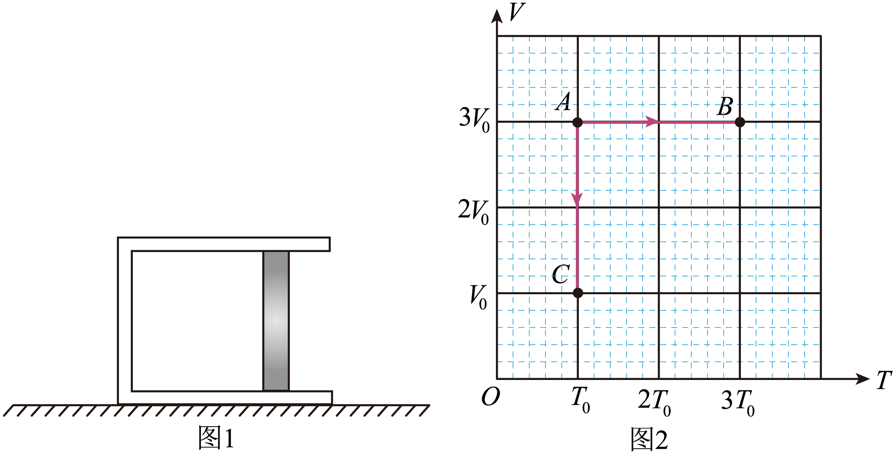
宏观现象研究．若汽缸内气体从状态A开始，分别经历如图
微观机制建模．为研究气体压强，可建立如下模型：汽缸内（内部为正方体）每个气体分子质量均为
过程 | 宏观现象 | 微观解释 |
气体体积不变，温度升高，压强增大 | ||
气体温度不变，体积减小，压强增大 |
宏观与微观联系．实际上该汽缸内大量理想气体分子运动的速率不尽相同，不同速率的气体分子对压强的贡献不同．如果速率处于
对温度的测量有很多方法，下面讨论以下设计方案。
如图为伽利略设计的一种测温装置示意图，玻璃管的上端与导热良好的玻璃泡连通，下端插入水槽中（水槽内的水足够多，并且水面位置保持不变），玻璃泡中封闭有一定量的理想空气。玻璃管内的体积和玻璃泡的体积相比可以忽略不计。根据玻璃管中水柱距离水槽的高度h在玻璃管上进行标定温度t。
（1）温度越高在玻璃管上标定的位置越偏上还是越偏下？
（2）玻璃管上标定的刻度是否均匀？请通过适当的公式进行推理说明。
（3）当水柱高度为
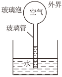
如图所示，某自动洗衣机洗衣缸的下部与一控水装置的竖直均匀细管相通，细管的上部封闭，并和一压力传感器相接．洗衣缸进水时，细管中的空气被水封闭，细管中空气压强会随着洗衣缸中水面的升降而变化，再通过压力传感器控制进水阀门的开合，以达到自动控水的目的．下列说法正确的是（ ）
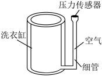
洗衣缸水位与细管水位总是等高
洗衣缸水位越高，传感器受到压力越大
洗衣缸水位与传感器受到压力成正比
洗衣缸进水过程，细管中的空气体积会不断减小
某同学用如图所示实验装置探究一定质量的气体发生等温变化时压强与体积的关系．将注射器活塞移动到体积最大的位置，接上软管和压强传感器，记录此时注射器内被封闭气体的压强p和体积V，推动活塞压缩气体，记录多组气体的压强和体积．
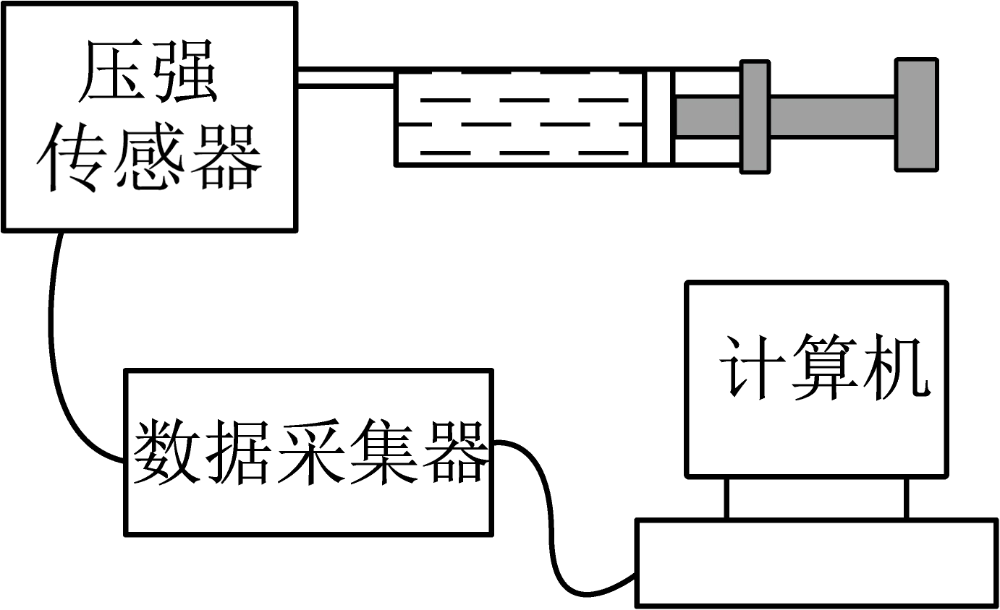
为保证注射器内封闭气体的温度不发生明显变化，下列说法正确的是 。
要尽可能保持环境温度不变
实验过程中应缓慢地推动活塞
实验过程中要用手握紧注射器并快速推拉活塞
实验前要在活塞与注射器壁间涂适量的润滑油
若考虑到连接注射器与传感器的软管内气体体积V0不可忽略，从理论上讲
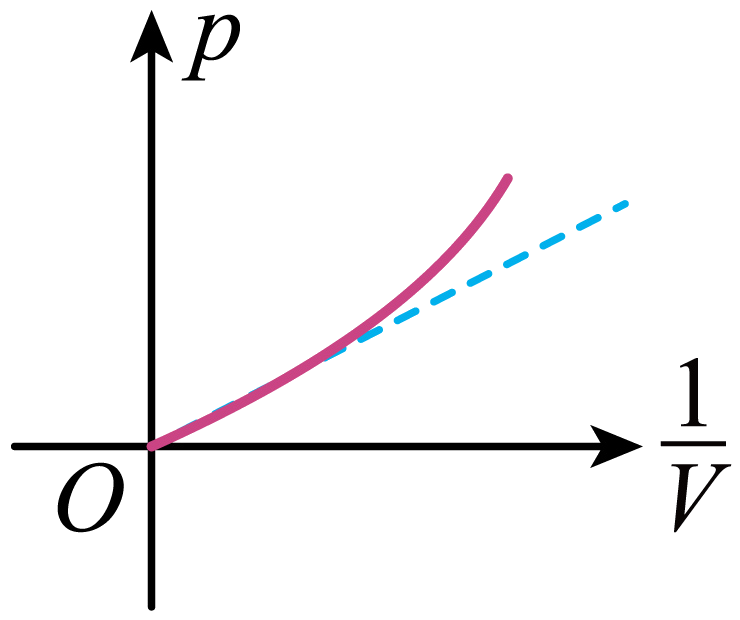
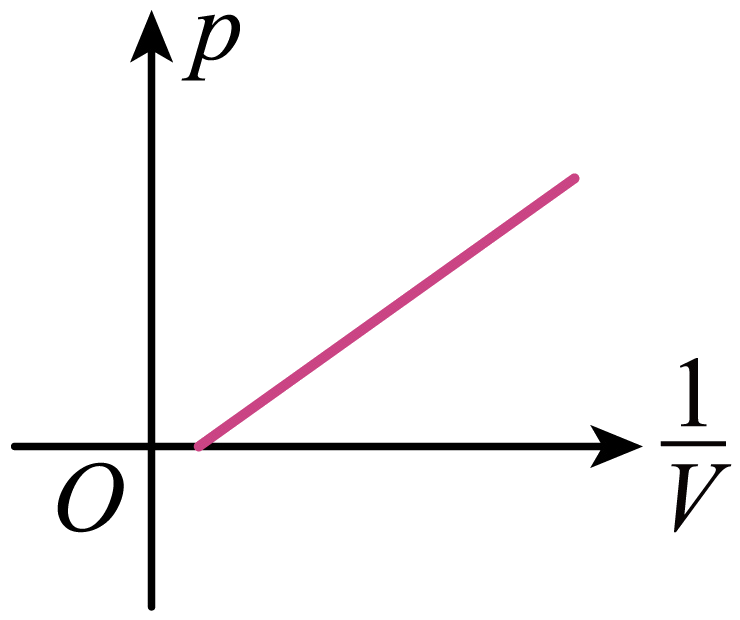
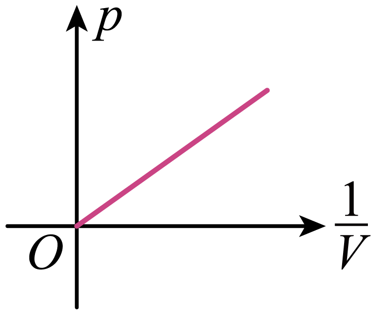
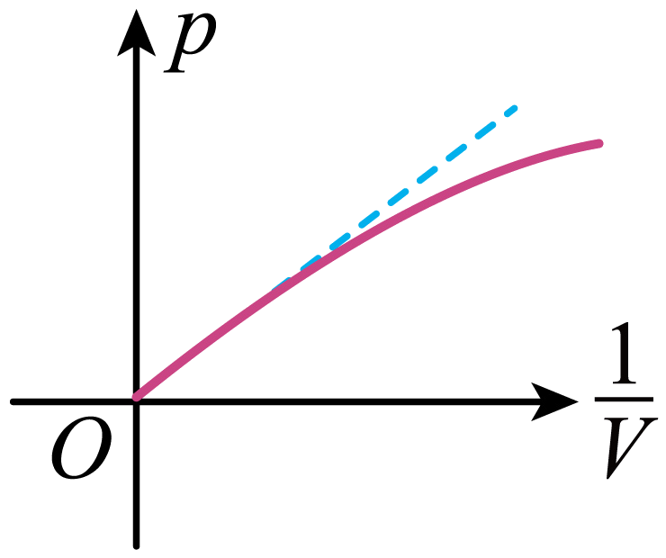
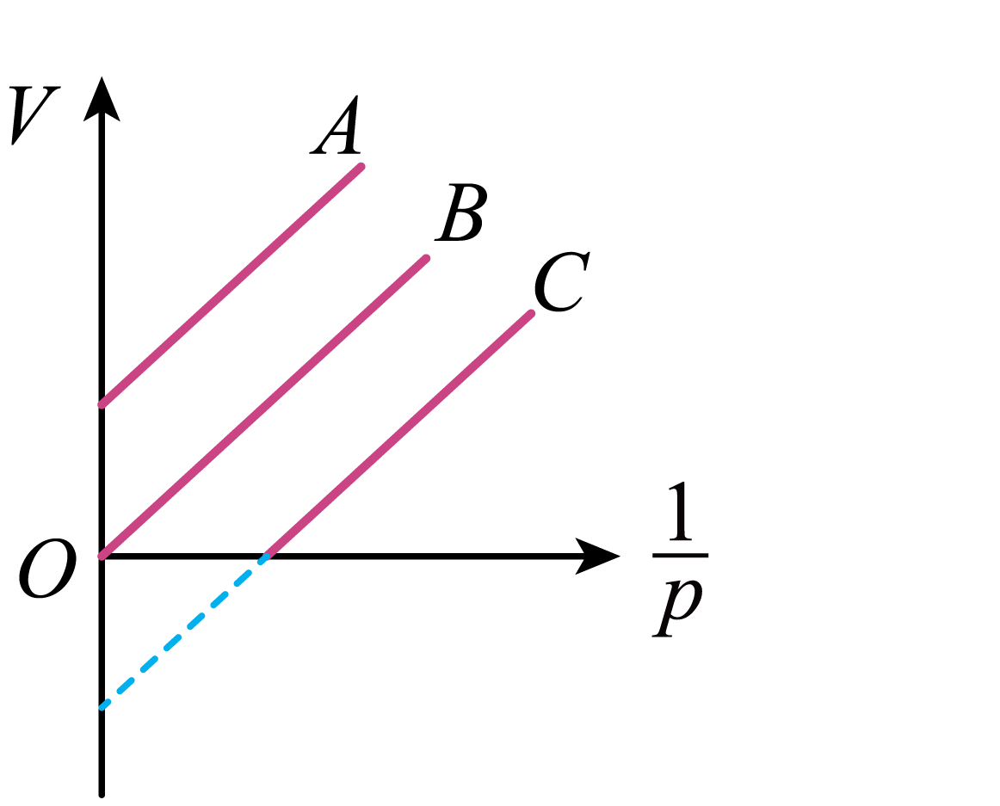
该同学用此装置测量大米的密度．他取少许大米，先用天平测出其质量，再将其装入注射器内，重
某同学用如图所示装置探究气体做等温变化的规律．
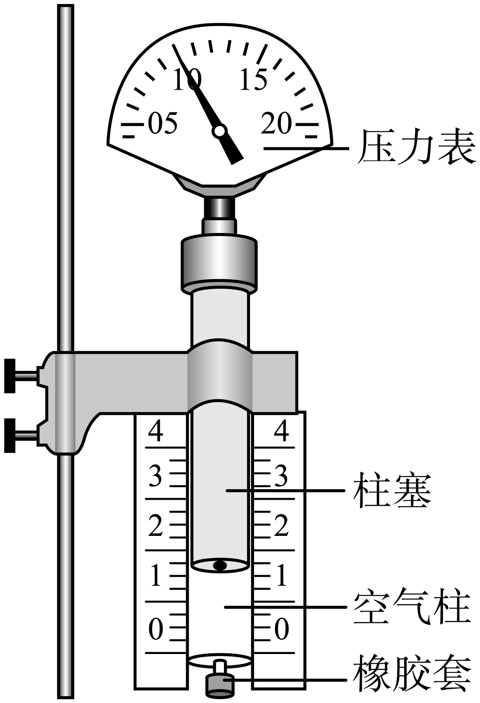
在实验中，下列哪些操作不是必需的（ ）
实验装置用铁架台固定，而不是用手握住玻璃管（或注射器），并且在实验中要缓慢推动活塞，这些要求的目的是 。
下列图像中，最能直观反映气体做等温变化的规律的是（ ）
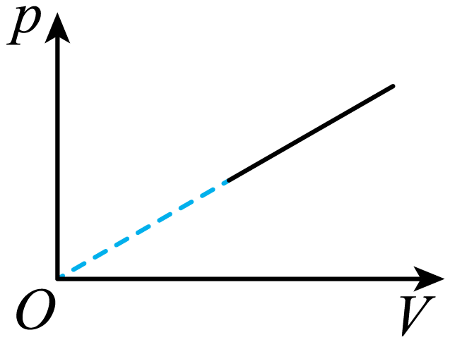
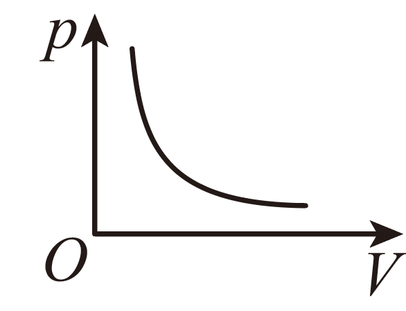
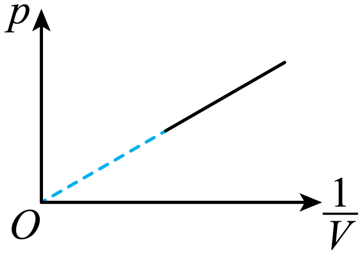
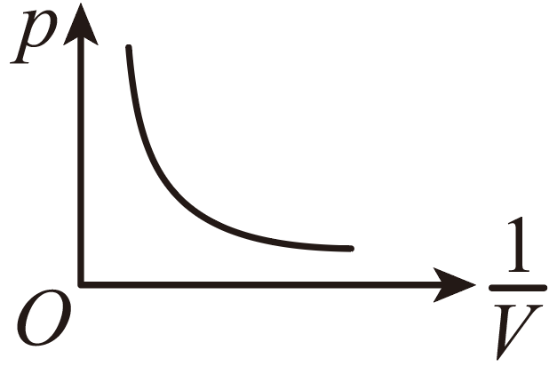
实验中测出了注射器内封闭气体的几组压强p和体积V的值后，用p作纵轴，
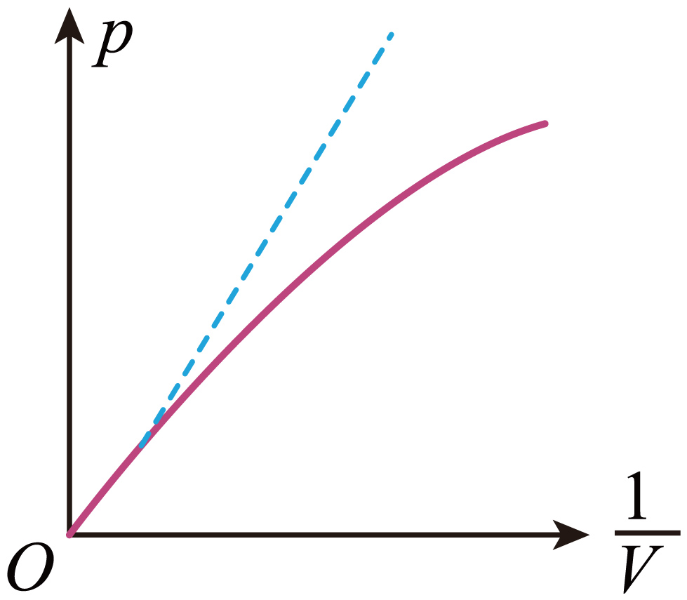
某同学用如图所示装置探究气体等温变化的规律．
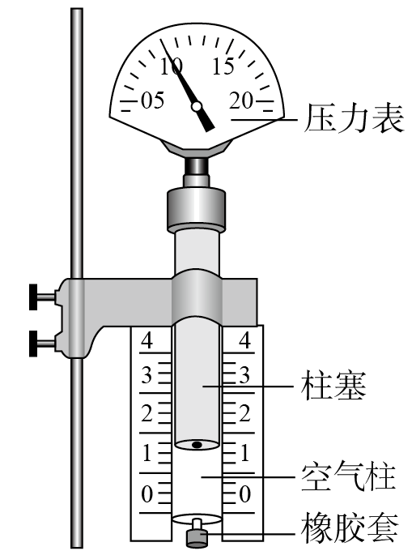
关于该实验的操作，下列叙述正确的是________。
为得出气体压强和体积的定量关系，该同学利用所采集的数据在坐标纸上描点，绘制出了如图所示的
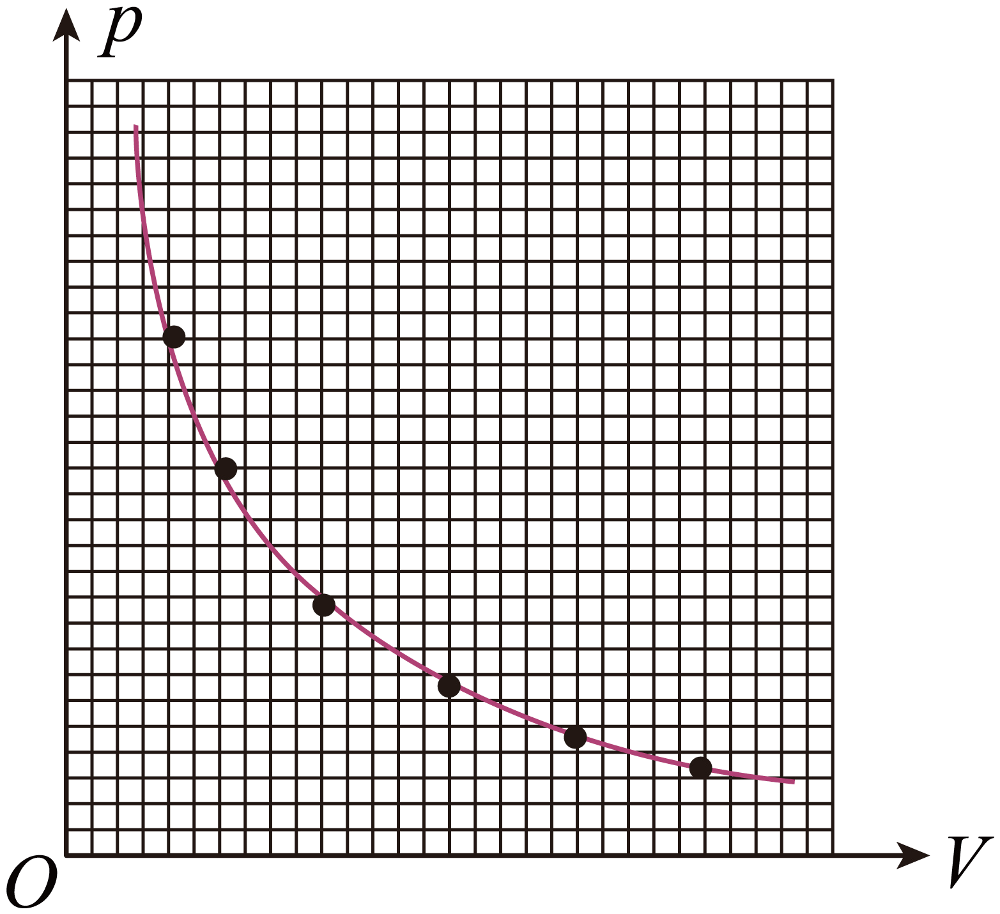
某实验小组利用压强传感器探究气体等温变化的规律，实验装置如图
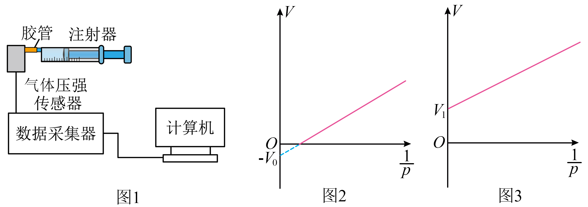
关于本实验，下列说法正确的是 ．
实验中应缓慢推拉活塞
实验中不可用手接触注射器的针筒部分
必须测出注射器内封闭气体的质量
该小组同学利用实验中得到的体积V与压强p的实验数据，绘制出的p−V图像为曲线．他们猜想如果
在（2）的基础上，该小组同学利用该装置测量一小石子的体 空白作答区积．他们将小石子装入注射器内进行实验，记录体积V和压强p．根据实验测量数据，作出如图3所示的
如图所示为模拟气体压强产生机理的演示实验。操作步骤如下：①把一颗豆粒从距秤盘20cm处松手让它落到秤盘上，观察指针摆动的情况；②再把100颗左右的豆粒从相同高度均匀连续地倒在秤盘上，观察指针摆动的情况；③使100颗豆粒从更高的似置均匀连续倒在秤盘上，观察指针摆动的情况。下列说法正确的是（ ）
步骤①和②模拟的是气体压强与气体分子平均动能的关系
步骤①和②模拟的是大量气体分子频繁碰撞器壁产生压力的持续性
步骤②和③模拟的是气体压强与分子密集程度的关系
步骤②和③模拟的是大量气体分子速率分布所服从的统计规律
对于一定质量的理想气体，下列说法中正确的是（ ）
如图所示，一定量的理想气体从状态A开始，经历两个过程，先后到达状态B和C。有关A、B和C三个状态温度
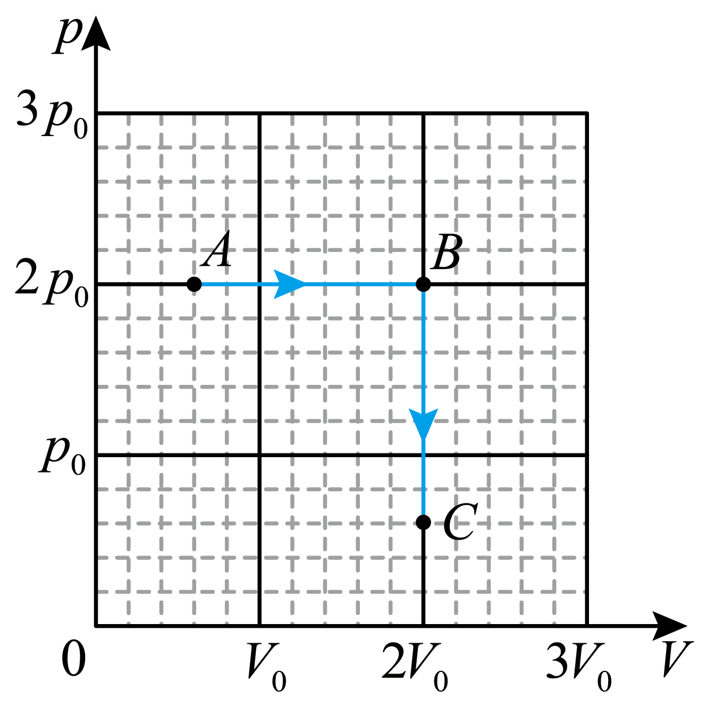
水银气压计中混入了一个气泡，上升到水银柱的上方，使水银柱上方不再是真空．当实际大气压相当于760mm高的水银柱产生的压强时，这个水银气压计的度数只有742mm，此时管中的水银面到管顶的距离为80mm．当这个气压计的读数为732mm水银柱时，实际的大气压强为（ ）
某同学用如图所示的装置探究等温情况下一定质量的气体压强与体积的关系，下列说法正确的是（ ）
关于一密闭容器中的氧气，下列说法正确的是（ ）
用豆粒模拟气体分子，可以模拟气体压强产生的原理．如图所示，从距秤盘80cm高处把1000粒的豆粒连续均匀地倒在秤盘上，持续作用时间为1s，豆粒弹起时竖直方向的速度大小变为碰前的一半，方向相反．若每个豆粒只与秤盘碰撞一次，且碰撞时间极短(在豆粒与秤盘碰撞极短时间内，碰撞力远大于豆粒受到的重力)，已知1000粒的豆粒的总质量为100 g．则在碰撞过程中秤盘受到的压力大小约为( )
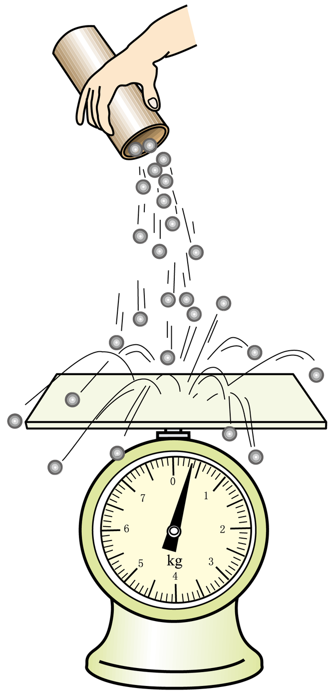
0.2N
0.6N
1.0N
1.6N
一定质量的理想气体分别保持温度
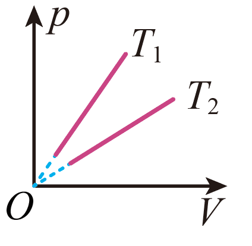
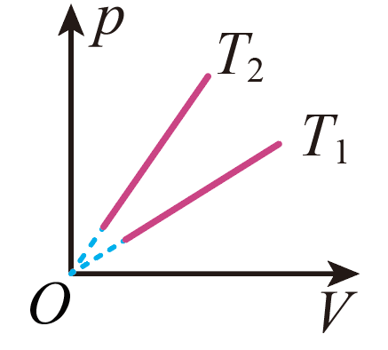
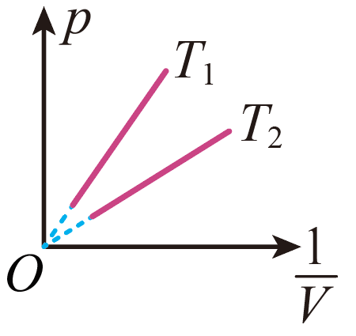
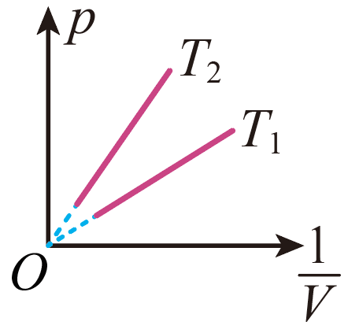
一定质量的理想气体在等压变化中体积增大了
升高到
升高了
升高到
升高到
如图甲所示是一个简易的气温计，竖直放置的空铝罐中插入一根内部粗细均匀的透明吸管，接口用蜡密封，在吸管内吸入一小段油柱（长度可以忽略），不计大气压的变化。已知铝罐的容积是357
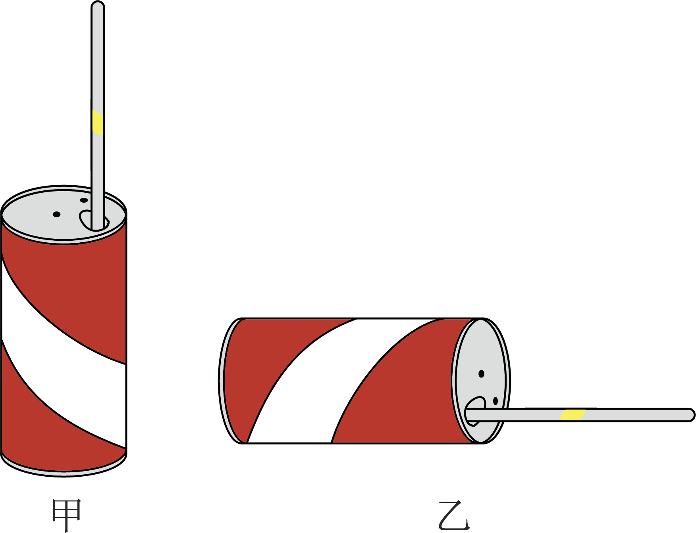
有一段12cm长汞柱，在均匀玻璃管中封住一定质量的气体。若管口向上将玻璃管放置在一个倾角为30°的光滑斜面上（如图所示），在下滑过程中被封闭气体的压强（设大气压强为
用图所示装置“探究等温情况下一定质量气体压强与体积的关系”的实验中，下列说法正确的是（ ）
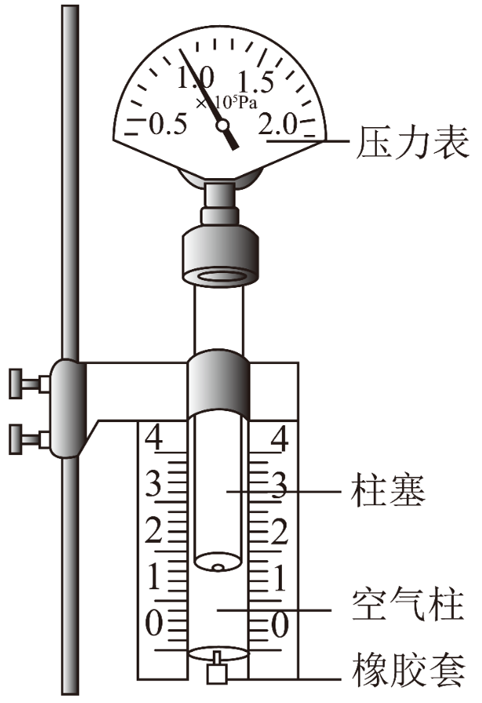
某同学用如图所示的装置探究等温情况下一定质量的气体压强与体积的关系，下列说法正确的是（ ）
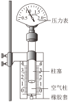
下载设置
![]()